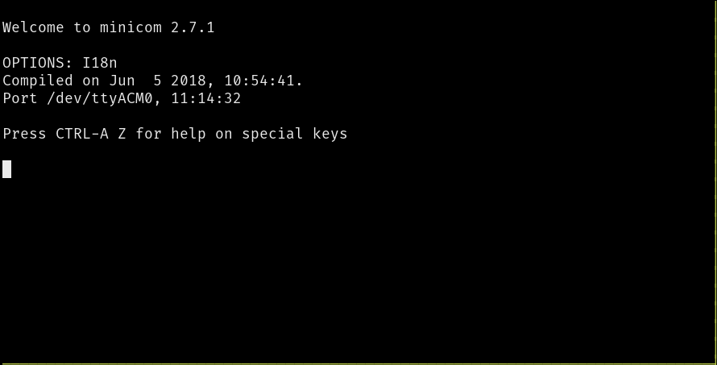

*nix tooling
Connecting the micro:bit board
If you connect the micro:bit board to your computer you
should see a new TTY device appear in /dev.
$ # Linux
$ dmesg | grep -i tty
[63712.446286] cdc_acm 1-1.7:1.1: ttyACM0: USB ACM device
This is the USB <-> Serial device. On Linux, it's named tty* (usually
ttyACM* or ttyUSB*).
On Mac OS ls /dev/cu.usbmodem* will show the serial device.
But what exactly is ttyACM0? It's a file of course!
Everything is a file in *nix:
$ ls -l /dev/ttyACM0
crw-rw----. 1 root plugdev 166, 0 Jan 21 11:56 /dev/ttyACM0
You can send out data by simply writing to this file:
$ echo 'Hello, world!' > /dev/ttyACM0
You should see the orange LED on the micro:bit, right next to the USB port, blink for a moment, whenever you enter this command.
minicom
We'll use the program minicom to interact with the serial device using the keyboard.
We must configure minicom before we use it. There are quite a few ways to do that but we'll use a
.minirc.dfl file in the home directory. Create a file in ~/.minirc.dfl with the following
contents:
$ cat ~/.minirc.dfl
pu baudrate 115200
pu bits 8
pu parity N
pu stopbits 1
pu rtscts No
pu xonxoff No
NOTE Make sure this file ends in a newline! Otherwise,
minicomwill fail to read it.
That file should be straightforward to read (except for the last two lines), but nonetheless let's go over it line by line:
pu baudrate 115200. Sets baud rate to 115200 bps.pu bits 8. 8 bits per frame.pu parity N. No parity check.pu stopbits 1. 1 stop bit.pu rtscts No. No hardware control flow.pu xonxoff No. No software control flow.
Once that's in place, we can launch minicom.
$ # NOTE you may need to use a different device here
$ minicom -D /dev/ttyACM0 -b 115200
This tells minicom to open the serial device at /dev/ttyACM0 and set its
baud rate to 115200. A text-based user interface (TUI) will pop out.

You can now send data using the keyboard! Go ahead and type something. Note that the text UI will not echo back what you type. If you pay attention to the yellow LED on top of the micro:bit though, you will notice that it blinks whenever you type something.
minicom commands
minicom exposes commands via keyboard shortcuts. On Linux, the shortcuts start with Ctrl+A. On
Mac, the shortcuts start with the Meta key. Some useful commands below:
Ctrl+A+Z. Minicom Command SummaryCtrl+A+C. Clear the screenCtrl+A+X. Exit and resetCtrl+A+Q. Quit with no reset
NOTE Mac users: In the above commands, replace
Ctrl+AwithMeta.